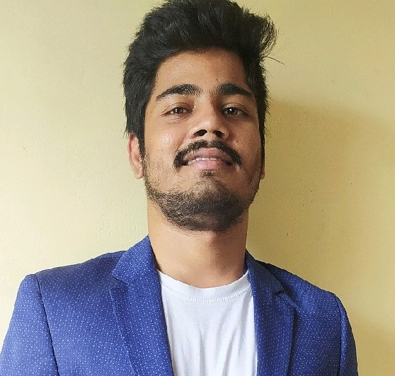

Sathish Reddy is an aspriging master's graduate of Business Analytics and Information Systems at the University of South Florida and a Data Science enthusiast with a demonstrable history of working in the Financial domain for about 2.5 years at Citi Bank and Capgemini. He is responsible for contributing towards "Layouts of the pages", "Categories" pages and Data_model using "Visio" in the 'LookAndFeel' assignment for Distributed Information Systems Course.
Vinay Ratnala worked as a Data Analyst for 2 years at Infosys. He is a focused and diligent student, whos's currently pursuing Masters in Business Analytics and Information Systems at University of South Florida. He is responsible for contributing towards "report.html","Charts.html" and "Index.html" page in the "LookAndFeel"assignment for Distributed Information Systems class.

An aspiring master's graduate of Business Analytics and Information Systems and a software development enthusiast having a demonstrable history of work experience over 1 year as a Business Analyst at BLS Implex. She is responsible for contributing towards "States" and "SurveyData" pages in the 'LookAndFeel' assignment for Distributed Information Systems class.
click on the link to redirect to Git Hub repository
This application let's you fetch data from Agricultural Resource Management via their public API.